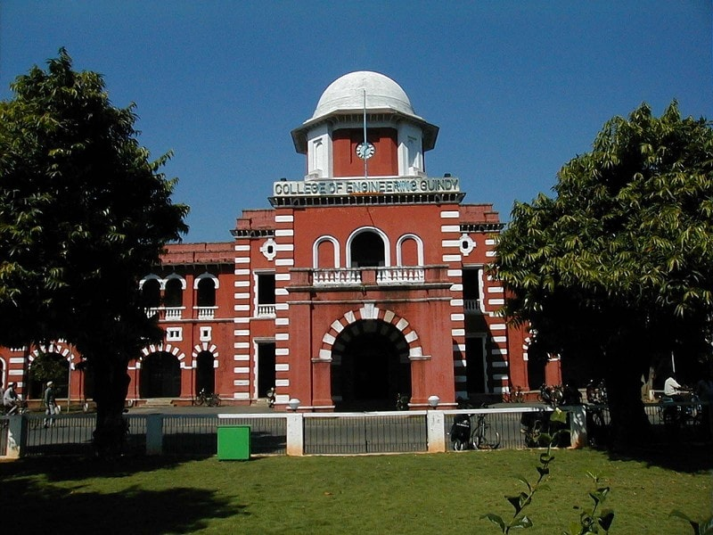
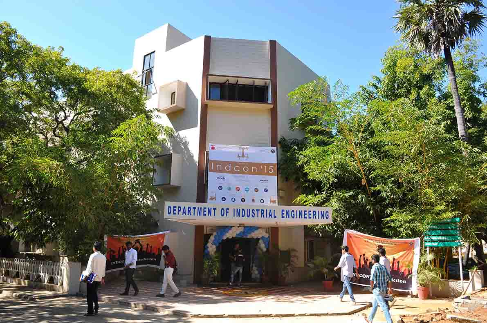

COLLEGE OF ENGINEERING GUINDY

College of Engineering Guindy (CEG), Chennai, a premier institution for post-secondary education in India, has been a renowned center for academic and professional excellence. The rectangular scarlet structure of one of the country’s oldest technical institute effectively encases not just an architecturally fine courtyard and corridors, but also the evolution of technical education in the city.What started as a survey school with eight students in 1794 at Fort St. George, shifted to several campuses including Kalas Mahal in Chepauk before moving to its current premises on what is today the Anna University campus in 1920. The original survey school became a civil engineering school, Civil Engineering College and an engineering college before becoming the College of Engineering, Guindy.
DEPARTMENT OF INDUSTRIAL ENGINEERING

THE INDUSTRIAL ENGINEERING programs at Anna University, as a specialization under the faculty of Mechanical Engineering has been given due recognition by forming into a division under the Department of Management studies, in the year 1973. The same division has been upgraded to a full-fledged Department of Industrial Engineering in the year 2002. Our vision is to emerge as a center of excellence in the field of Industrial Engineering where the excellent practices of teaching, learning and research synergize
SOCIETY OF INDUSTRIAL ENGINEERS
SOCIETY OF INDUSTRIAL ENGINEERS (SIE) is a non-profit, completely student run organization that aims to widen the technical horizon of the student community. We do this by helping students turn promising ideas into projects and provide assistance to convert projects to real time products. Industrial Engineers around the world are known for their innovative optimization skills, and the Department of Industrial Engineering, CEG, is one of the best in the entire nation. It is in celebration of this culture of innovation and optimization that students of our department organize annually, INDCON - an International Techno - Management fest, which will be held from March 2nd - March 4th, 2017.